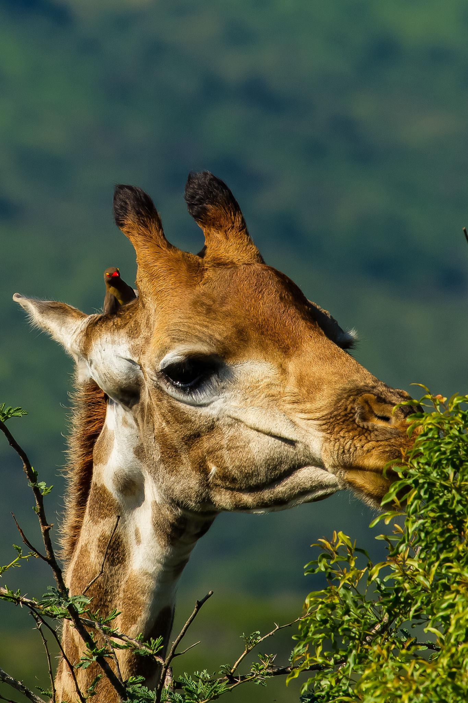

Las jirafas son animales herbívoros, lo que significa que solo comen plantas.
Las jirafas comen hojas, ramas tiernas, flores y frutos.
Su alimento favorito son las hojas de los árboles de acacia.
Gracias a su largo cuello pueden alcanzar hojas muy altas que otros animales no alcanzan.
También tienen una lengua larga y resistente que les ayuda a tomar ramas con espinas.
Una jirafa adulta puede comer hasta 30 kilogramos de hojas al día.
Pasan muchas horas alimentándose para obtener suficiente energía.
Las jirafas obtienen mucha agua de las plantas que comen.
Cuando toman agua deben abrir sus patas delanteras para alcanzar el suelo.
La lengua de una jirafa puede medir aproximadamente 45 centímetros.